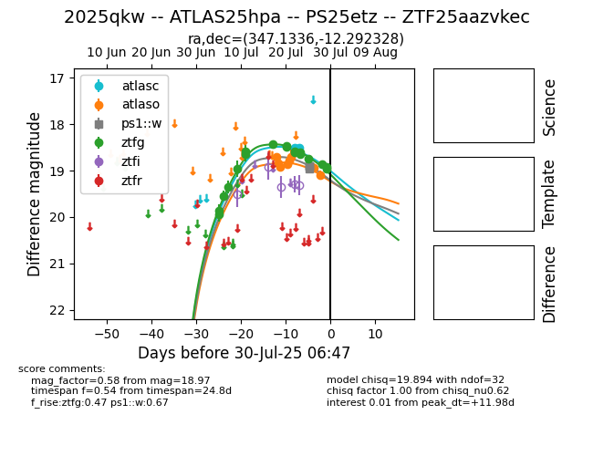

Target 2025qkw at 2025-07-30 06:47, see:
FINK: fink-portal.org/2025qkw
Lasair: lasair-ztf.lsst.ac.uk/objects/2025qkw
ALeRCE: alerce.online/object/2025qkw
TNS: wis-tns.org/object/2025qkw
YSE: ziggy.ucolick.org/yse/transient_detail/2025qkw
alt names
ZTF25aazvkec (ztf,fink)
2025qkw (tns,yse)
PS25etz (panstarrs)
ATLAS25hpa (atlas)
coordinates:
equatorial (ra, dec) = (347.1336,-12.29233)
galactic (l, b) = (59.4790,-61.69917)
photometry
last atlasc=18.51, atlaso=19.10, ps1::w=18.89, ztfg=18.97
2 atlasc, 8 atlaso, 4 ps1::w, 18 ztfg detections
